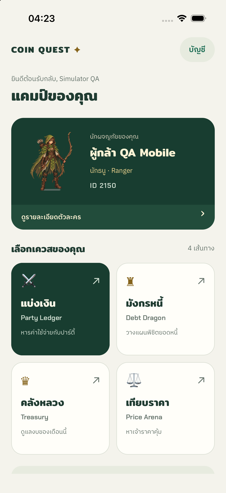
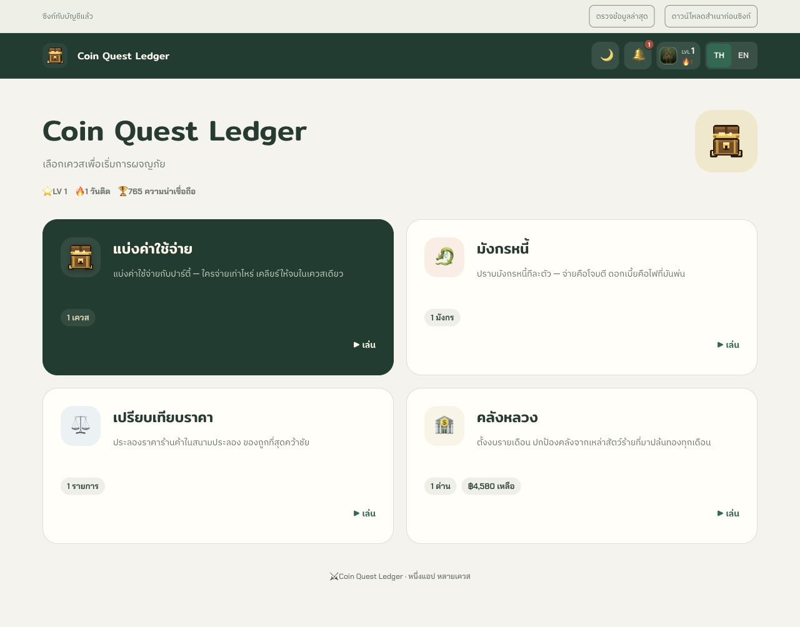

Coin Quest · Before / After
12 October 2026 · Local development + iPhone 17 Pro Simulator · Same fonts and Firebase account
Mobile app · Home


Actual app captures at scroll top. Baseline: 04:05 before this redesign; both show the same character with 162 XP. No screenshot reconstruction.
Website · Home


1280 px viewport · full-page captures. Runtime sync data can settle after the first render.